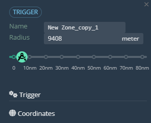

Triggers & Zones
Work in progress
The first element of the Triggers panel is the Trigger Rules button:
This window allows the user to upload trigger rules in .json format.
Zone List:

This window is similar in layout to the ones we covered before, so let’s go over the main section:
- Zone Name displays the zone, as well as it’s color.
- ID is a unique identifier number.
- Radius displays the size of the zone, in meters.
- Properties displays the amount of property key-value pairs assigned to that zone.
- Type shows the type zone, circle or polygon.
- Hidden once again shows whether the unit is hidden or shown.
Next are the Circle and Polygon buttons. These buttons are utilized to place the respective zones.
Zone Panel

Displays the zone name and radius.
On the panel is also a slider to increase/decrease the size of the zone.
Zone Settings
Select/change the zone type with the ‘Type’ dropdown menu. Directly below that, select the color of the zone.
At the bottom is a ‘Properties’ section with a ‘Create’ button. Clicking this will create a window to enter Key:Value pairs.
Coordinates
Here you will find the coordinates for the center of the zone.
Zone Manipulation
Place Zones
To place a zone, from the main editor panel on the left, click and drag from the ‘Circle’ button onto the map. Where you drop it is where the zone will be placed.
Select/Deselect Zones
Work in progress.
Move Zones
Work in progress.